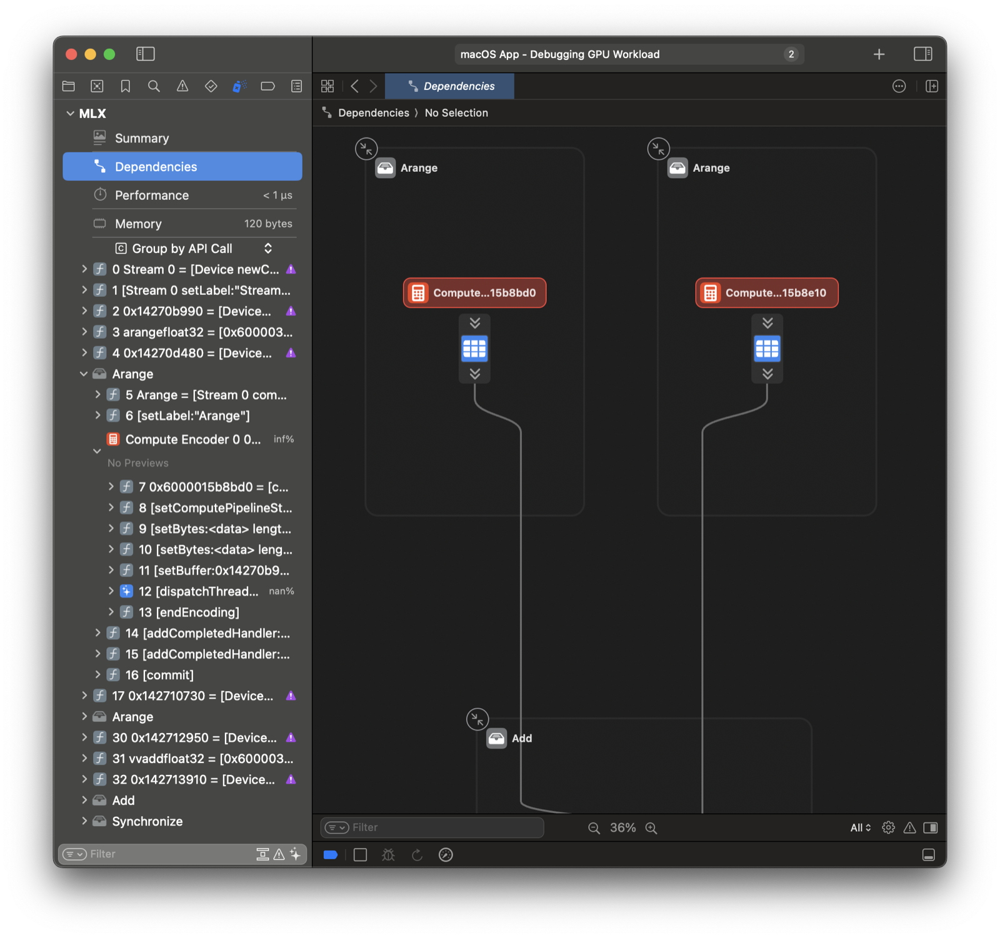
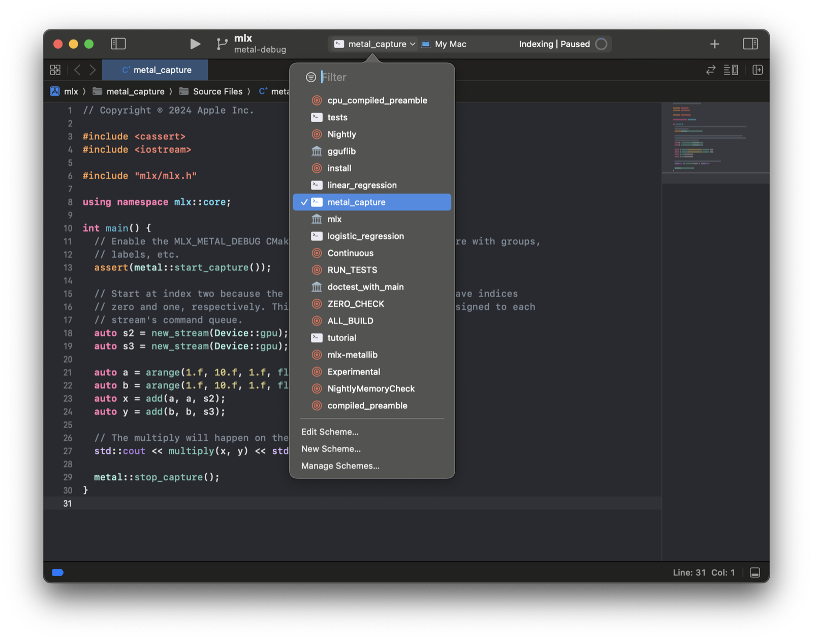

===== docs/src/dev/metal_debugger.rst =====
Metal Debugger
==============
.. currentmodule:: mlx.core
Profiling is a key step for performance optimization. You can build MLX with
the ``MLX_METAL_DEBUG`` option to improve the Metal debugging and
optimization workflow. The ``MLX_METAL_DEBUG`` debug option:
* Records source during Metal compilation, for later inspection while
debugging.
* Labels Metal objects such as command queues, improving capture readability.
To build with debugging enabled in Python prepend
``CMAKE_ARGS="-DMLX_METAL_DEBUG=ON"`` to the build call.
The :func:`metal.start_capture` function initiates a capture of all MLX GPU
work.
.. note::
To capture a GPU trace you must run the application with
``MTL_CAPTURE_ENABLED=1``.
.. code-block:: python
import mlx.core as mx
a = mx.random.uniform(shape=(512, 512))
b = mx.random.uniform(shape=(512, 512))
mx.eval(a, b)
trace_file = "mlx_trace.gputrace"
# Make sure to run with MTL_CAPTURE_ENABLED=1 and
# that the path trace_file does not already exist.
mx.metal.start_capture(trace_file)
for _ in range(10):
mx.eval(mx.add(a, b))
mx.metal.stop_capture()
You can open and replay the GPU trace in Xcode. The ``Dependencies`` view
has a great overview of all operations. Checkout the `Metal debugger
documentation`_ for more information.
.. image:: ../_static/metal_debugger/capture.png
:class: dark-light
Xcode Workflow
--------------
You can skip saving to a path by running within Xcode. First, generate an
Xcode project using CMake.
.. code-block::
mkdir build && cd build
cmake .. -DMLX_METAL_DEBUG=ON -G Xcode
open mlx.xcodeproj
Select the ``metal_capture`` example schema and run.
.. image:: ../_static/metal_debugger/schema.png
:class: dark-light
.. _`Metal debugger documentation`: https://developer.apple.com/documentation/xcode/metal-debugger

